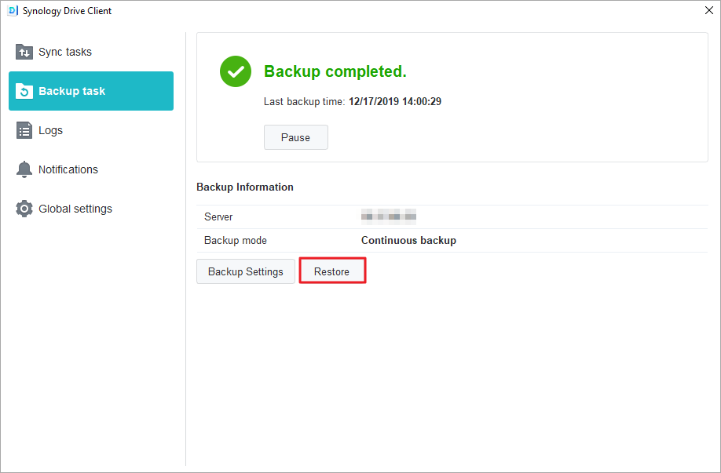

Vue d'ensemble
Synology Drive Server est non seulement un logiciel sophistiqué de synchronisation inter-plateformes, mais également un moyen intelligent de sauvegarder des données à partir des ordinateurs personnels des utilisateurs. Son utilitaire de bureau, Synology Drive Client, est une solution de sauvegarde instantanée et en temps réel qui permet d'économiser la bande passante et offre une excellente protection grâce à jusqu'à 32 anciennes versions d'un seul fichier.
Configurer Synology Drive Server sur Synology NAS et télécharger Synology Drive Client
- Accédez à Centre de paquets, recherchez Synology Drive Server, puis cliquez sur Installer. Trois paquets seront téléchargés : la console d'administration de Synology Drive, Synology Drive ShareSync et Synology Drive.
- Lancez Synology Drive. Dans le coin inférieur droit, un message vous invitant à télécharger Synology Drive Client s'affiche.

Vous pouvez également cliquer sur l'icône de l'utilisateur dans le coin inférieur gauche et accéder à Client > Télécharger le client.

Vous pouvez également télécharger Synology Drive Client à partir du Centre de téléchargements de Synology. - Lancez l'installateur sur votre ordinateur et suivez les instructions pour installer Synology Drive Client. Après l'installation, exécutez Synology Drive Client en cliquant sur Démarrer maintenant.

- Sélectionnez Tâche de sauvegarde.

- Saisissez l'adresse ou le QuickConnect ID du Synology NAS qui exécute Synology Drive Server, le nom d'utilisateur et le mot de passe. Vous pouvez également cliquer sur l'icône de recherche située à droite et Synology Drive Client recherchera automatiquement les Synology NAS disponibles sur votre réseau local. Cliquez sur Suivant.

- Sélectionnez la source de sauvegarde et décochez tous les sous-dossiers que vous ne souhaitez pas synchroniser. Synology Drive Client crée un dossier de sauvegarde sur la destination sélectionnée avec le nom de votre ordinateur. Le dossier home est sélectionné comme dossier de destination par défaut. Si vous souhaitez utiliser un dossier ne figurant pas dans la liste, contactez votre administrateur système. Les administrateurs système peuvent consulter la page d'aide de la console d'administration de Synology Drive. Vous pouvez également cliquer sur Règles de sauvegarde si vous souhaitez configurer des filtres ou des règles de synchronisation. Cliquez sur Suivant.

- Sélectionnez un mode de sauvegarde et cliquez sur Suivant.

- Vérifiez le résumé de vos paramètres de sauvegarde. Cliquez sur Précédent pour apporter des modifications ou sur Terminé pour terminer la configuration.

- Vous pouvez consulter la progression de votre sauvegarde dans la fenêtre principale.

Télécharger ou restaurer la version précédente d'un fichier synchronisé sur Synology Drive Client
- Dans Synology Drive Client, accédez à Tâches de sauvegarde > Restaurer et recherchez le fichier ou le dossier que vous souhaitez restaurer.
 - Sélectionnez le fichier que vous souhaitez récupérer et cliquez sur Parcourir les versions précédentes. Si le fichier a été supprimé ou effacé par erreur de votre ordinateur, vous pouvez cliquer sur Restaurer pour le restaurer.

- Sélectionnez la version du fichier que vous souhaitez télécharger et cliquez sur Télécharger.

Télécharger ou restaurer la version précédente d'un fichier synchronisé sur la console d'administration de Synology Drive
- Dans DSM, accédez à Console d'administration de Synology Drive > Dossier d'équipe, cliquez sur le dossier dans lequel se trouve le fichier que vous souhaitez restaurer, puis cliquez sur Explorateur de versions.

- Dans la fenêtre Explorateur de versions, cliquez sur le fichier que vous souhaitez récupérer, puis cliquez sur Parcourir les versions précédentes.

- Sélectionnez la version du fichier que vous souhaitez télécharger et cliquez sur Télécharger. Si vous êtes sûr de vouloir restaurer la version sélectionnée, vous pouvez également cliquer sur Restaurer et elle écrasera votre version actuelle.

Davantage de protection de vos données
Pour découvrir d'autres manières de protéger et de sauvegarder vos données, veuillez cliquer ici afin d'accéder à plus de tutoriels concernant les autres services de sauvegarde offerts sur DSM.